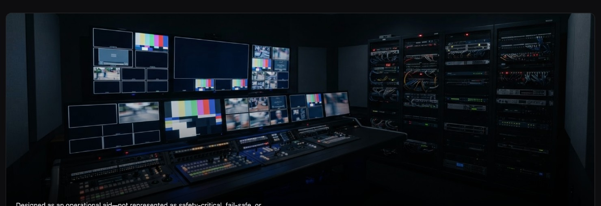

Scheduler & Automation
Schedule recordings, automate workflows, and never miss a moment.
HyperDeck Dashboard is a professional browser-based control application for Blackmagic Design HyperDeck recorders. It centralizes multi-deck monitoring, transport control, recording operations, media management, clip playback, playlist creation, scheduling, I/O configuration, diagnostics, and protected maintenance tools in one operator-focused interface.
Cross-platform. Browser based. Self-hosted. Built for broadcast workflows.
Requires a compatible PHP web-server environment. MAMP is recommended for straightforward local installation on macOS or Windows.
Download MAMPSchedule recordings, automate workflows, and never miss a moment.
Monitor media, check capacity, format, and manage with confidence.
Precision timecode control with jump, presets, loop, and external sync.
Browse, preview, and play clips or create custom playlists.
Configure video, audio, network, and recorder settings for every environment.
Customize timing, deck configuration, interface preferences, and system behavior.
Monitor status, control transport, and manage recordings across all your HyperDecks from one unified interface.
For operators and engineers managing repeatable capture, playback, monitoring, and testing workflows across networked HyperDeck recorders.

Record satellite, network, and broadcast feeds automatically.
Control multiple HyperDecks seamlessly in studio workflows.
Record conferences, events, and live shows with scheduling tools.
Capture every moment with reliable multi-deck recording.
Browse and play clips from connected decks in the browser.
Record to multiple decks simultaneously for added reliability.
Capture transmissions continuously and consistently.
Monitor deck status, timecode, and system health in real time.
Select a panel to enlarge it.
Recommended for a straightforward local installation.
/Applications/MAMP/htdocs/hyperdeck-dashboard/http://localhost:8888/hyperdeck-dashboard/The exact port can vary with MAMP configuration.Supported Windows computer and current MAMP for Windows.
Apache or another compatible server with PHP 8.4.1 recommended.
MAMP provides Apache, Nginx, PHP, and MySQL for macOS and Windows. Standard MAMP is sufficient for a typical local installation.
Current Chrome, Edge, Firefox, or Safari. Desktop browsers are recommended for full operational use.
One or more compatible recorders with Ethernet, valid IP configuration, remote Ethernet control, host network access, compatible firmware, and supported media.
Install MAMP on the host Mac or Windows computer, or prepare a compatible PHP web server.
Download the current Release Candidate package from GitHub.
Download HyperDeck DashboardExtract the package and place the folder inside the configured web-server document root.
Start Apache through MAMP and confirm the local Dashboard address opens in a browser.
Enter each recorder's name, IP address, model, and media configuration. Confirm every device reports online.
Test record, stop, play, timecode, media selection, scheduled start and stop, and the scheduler service with noncritical media.
Use the tabs for the local environment you are preparing. Copy buttons place the command in your clipboard.
cd /Applications/MAMP/htdocs
git clone https://github.com/Three-Crow-Studios/hyperdeck-dashboard.git
open http://localhost:8888/hyperdeck-dashboard/cd C:\MAMP\htdocs
git clone https://github.com/Three-Crow-Studios/hyperdeck-dashboard.git
start http://localhost:8888/hyperdeck-dashboard/cd /path/to/web-root
git clone https://github.com/Three-Crow-Studios/hyperdeck-dashboard.git
# Configure PHP 8.4.x, write permissions, and private LAN routing.The hosted server must have secure network access to the HyperDeck recorder LAN. Do not expose the Dashboard or recorders directly to the public internet.
This Release Candidate represents the feature-complete build intended to become the next stable HyperDeck Dashboard release. Test with available HyperDeck models and report reproducible issues through GitHub.
Use the dedicated Downloads page to select the MAMP package for macOS or Windows, or the Host / Development package for an existing PHP server.
MAMP separately provides the Apache and PHP environment required for a straightforward local installation on macOS or Windows. MAMP PRO is not required.
Download releases, review source, report bugs, request features, share compatibility information, fork the project, contribute improvements, and follow development.
The roadmap reflects the next areas of development and may evolve as hardware testing and community feedback continue.
Expanded support for HyperDeck Extreme 8K HDR quad-record workflows.
Improved schedule visibility and coordination across multiple Dashboard hosts.
Webhooks • Email Automation
REST API • Event Triggers
Continued compatibility testing across HyperDeck models, firmware, and media topologies.
Expanded clip, playlist, and deck-level playback management.
Ongoing refinement of slot detection, formatting, capacity planning, and active-media handling.
HyperDeck Dashboard is developed as an independent open-source project around real-world broadcast production needs. If it saves time, simplifies a workflow, or becomes part of your production environment, consider supporting continued development through GitHub Sponsors.
Designed & Developed by Three Crow Studios
Technology, workflow design, software development, and production systems created for real-world media operations.
Visit Three Crow Studios ↗Original Design and Modifications by Rob Hammer
Broadcast Technology Executive · Live Sports Production Architect · Producer · Systems Designer
HyperDeck Dashboard was conceived around practical production needs, developed through hands-on testing with multiple HyperDeck models, and designed to make complex broadcast workflows more accessible, repeatable, and dependable.
No. It is a browser-based application that runs from a compatible PHP web server. MAMP is the recommended straightforward local server environment for macOS and Windows.
Yes. The browser interface is cross-platform. The host computer must run MAMP or another compatible PHP-capable server.
The browser must be open for direct operator interaction. Scheduled events can execute without it after the background service is installed and verified. The host computer and server must remain running.
MAMP is recommended, but another compatible PHP web server can be used when it meets the networking, file-permission, and PHP requirements.
No. Standard MAMP should be sufficient for a typical local installation.
Only when that server has secure network access to the HyperDeck recorders. Normal shared hosting generally cannot reach devices on a private production network.
Yes, when the browser device can reach the Dashboard host and the host is configured to accept the connection. Firewall and network settings may need adjustment.
Compatibility and available features vary by model, firmware, media configuration, and Dashboard release. Consult the compatibility notes and test your hardware.
No. HyperDeck Dashboard is an independent open-source project and is not affiliated with, sponsored by, approved by, or supported by Blackmagic Design.
It should be treated as prerelease software and fully tested with the intended recorders, media, network, host, and scheduler workflow before production use.
Download HyperDeck Dashboard, connect your recorders, and help validate the next stable release.
View the Project on GitHub